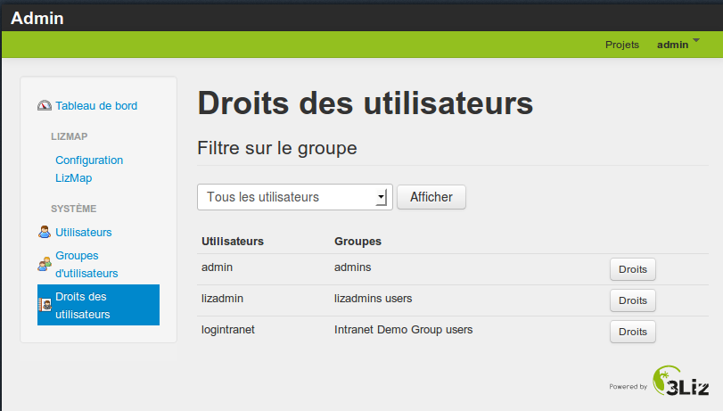

Gérer les groupes et les utilisateurs dans Lizmap¶
Les groupes et les utilisateurs : principes¶
En tant qu’administrateur, vous pouvez
- créer, renommer, supprimer des groupes d’utilisateurs
- créer, modifier, supprimer des utilisateurs
- rattacher un utilisateur à un ou plusieurs groupes
- Lizmap
- Les droits sur les répertoires Lizmap sont gérés au niveau des groupes d’utilisateurs, pas au niveau des utilisateurs
Gérer les groupes : créer, renommer, supprimer¶
- Créer un groupe : Menu Groupes d’utilisateurs et descendre jusqu’au formulaire Créer un groupe
- Donné un libellé : il est possible d’utiliser des espaces et des accents
- Donner un identifiant : un seul mot sans caractères spéciaux
Via cette page, on peut aussi renommer ou supprimer un groupe
- Application
- Supprimer le groupe “lizadmins” et “Intranet demo group”
- Créer un groupe “prive” qui contiendra les utilisateurs ayant accès aux cartes privées
Gérer les utilisateurs¶
- Créer : Menu Utilisateurs > Créer un nouvel utilisateur: donner un identifiant, un email et un mot de passe
- On peut aussi modifier un utilisateur existant
- Application
- Créer un ou plusieurs utilisateurs
- Lizmap
- Une fois les utitilisateurs créés, il faut les mettre dans des groupes pour leur assigner les droits liés

Mettre les utilisateurs dans des groupes¶
- Menu Droits des utilisateurs
- On peut filtrer les utilisateurs visibles via la liste déroulante
- Pour mettre les utilisateurs, utiliser le bouton Droits
- La page affiche un tableau avec les droits en ligne et les groupes en colonne
- La dernière colonne affiche les droits résultants
- Dans la ligne d’entête, des boutons + et - permettent de mettre/enlever l’utilisateur dans un groupe
- CONSEIL : ne pas utiliser la colonne Droits personnels
Assigner des groupes pour chacun des utilisateurs créés¶
